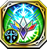
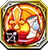

Fourth Ragnarok
62000113

Aegis イージス |
 イージスの領域
イージスの領域
|
|---|---|
| 自身が盾を装備している場合、デュエル時に敵ユニットから受けるダメージを2撃まで無効にする ※麻痺時も発動する | |
6103813

Almace アルマス |
アルマスの邂逅 |
| 自身のHPが1000、力・魔が30、運が10上昇し、騎乗ユニットへのダメージが200%威力となる | |
6103823

Almace アルマス |
 アルマスの朗笑
アルマスの朗笑
|
| クエスト開始から3ターンの間、自軍剣ユニットの移動力が1上昇する | |
6100713

Arondight アロンダイト |
アロンダイトの愁苦 |
| 「アロンダイト feat. 狂う心は純雪の如く」装備時のみ発動。自身の行動終了時、自身のいるマスと隣接するマスに2ターンの間、地形【雪】の性質を追加する | |
62000913

Belphegor ベルフェゴール |
ベルフェゴールの怠惰 |
| 攻撃時に30%の確率で1ターンの間、相手に行動不可を付与する | |
6303113

Cassius カシウス |
 カシウスの観察
カシウスの観察
|
| 自身の物防が20%上昇する。さらに自軍フェーズ開始時、自身および周囲3マス以内の味方ユニットのHPを最大HPの10%分回復する | |
6303123

Cassius カシウス |
カシウスの旅路 |
| 自身が雷属性ユニットの場合、自身の解放スキルの残り使用可能ターン数を-1する。また、この発動直後に再行動することができる | |
6201913

Chiyou シユウ |
シユウの願い事 |
| 自身が雷属性のときのみ発動。自軍フェーズ開始時、自身の周囲2マス以内に敵ユニットがいる場合、1ターンの間、自身の物攻が25%上昇し、デュエル後、相手に50ダメージを与える効果を得る。対象が「轟雷属性」の効果を持つスキルを所持している場合、物攻が25%ではなく50%上昇する ※「カウンター無効化」では封じられない ※このダメージで撤退させられる | |
6201613

Cita シタ |
 シタの説伏
シタの説伏
|
| 自身の物攻が30%上昇する。HPが90%以上の場合、さらに物攻が30%上昇する | |
6103513

Damocles ダモクレス |
ダモクレスの親愛 |
| 自身を含む周囲3マス以内の味方ユニットの回復不可・毒・出血を治癒し、HPを最大HPの20%分回復する | |
6103523

Damocles ダモクレス |
ダモクレスの戒心 |
| エンシェントキラーズ装備時のみ発動。クエスト開始から3ターンの間、封印に対して耐性を得る ※この耐性はデュエル時以外の封印に対しても効果を発揮する | |
6400414

Eros エロース |
エロースの恋話 |
| 自身が光属性のときのみ発動。クエスト開始から5ターンの間、敵との距離が遠いほど、自身の物攻・必殺が上昇する効果を得る ※最大で10マス離れた相手に対して物攻・必殺が50%上昇する | |
6401913

Failnaught フェイルノート |
フェイルノートの黎明 |
| 自身が闇属性のときのみ発動。クエスト開始から5ターンの間、敵との距離が遠いほど、自身の速・必殺が上昇する効果を得る ※最大10マス以上離れた相手に対して速が30、必殺が50%上昇する | |
6501613

Flabellum フラベルム |
 フラベルムの巡回
フラベルムの巡回
|
| 風属性ユニット装備時のみ発動。追撃が発生する場合、自身の攻撃直後に高確率で追撃を行うようになる。さらに、自身が地形【水場】にいる場合、自身に追撃が発生する ※相手が追撃を封じるスキルを所持している場合は発動しない | |
6301813

Forcas フォルカス |
フォルカスの誓願 |
| 自身が闇属性のときのみ発動。自軍フェーズ開始時、自身の周囲2マス以内に敵ユニットがいる場合、1ターンの間、自身の物攻が25%上昇し、デュエル後、相手に50ダメージを与える効果を得る。対象が「宵闇属性」の効果を持つスキルを所持している場合、物攻が25%ではなく50%上昇する ※「カウンター無効化」では封じられない ※このダメージで撤退させられる | |
6502713

Freischutz フライシュッツ |
 フライシュッツの懐抱
フライシュッツの懐抱
|
| 地形【森林】にいる場合、自身の速・回避が20%上昇する | |
6502723

Freischutz フライシュッツ |
 フライシュッツの相関 |
| エンシェントキラーズ装備時のみ発動。デュエル時、自身が有利属性の場合、与えるダメージが50%増加する | |
6300713

Gae Bulg ゲイボルグ |
 ゲイボルグの迅走
ゲイボルグの迅走
|
| 自身が炎属性のときのみ発動。自軍フェーズ開始時、自身の周囲2マス以内に敵ユニットがいる場合、1ターンの間、自身の物攻が25%上昇し、デュエル後、相手に50ダメージを与える効果を得る。対象が「烈火属性」の効果を持つスキルを所持している場合、物攻が25%ではなく50%上昇する ※「カウンター無効化」では封じられない ※このダメージで撤退させられる | |
62000313

Gjallarhorn ギャラルホルン |
ギャラルホルンの救済 |
| 自身の周囲5マス以内の味方ユニット1体を選択して発動。1ターンの間、自身の物攻・魔攻・運の30%を与える | |
62000513

Gleipnir グレイプニル |
 グレイプニルの束縛
グレイプニルの束縛
|
| 自身が氷属性のときのみ発動。自軍フェーズ開始時、自身の周囲2マス以内に敵ユニットがいる場合、1ターンの間、自身の物攻が25%上昇し、デュエル後、相手に50ダメージを与える効果を得る。対象が「蒼氷属性」の効果を持つスキルを所持している場合、物攻が25%ではなく50%上昇する ※「カウンター無効化」では封じられない ※このダメージで撤退させられる | |
6303413

Grand Epieu グランテピエ |
グランテピエの約束 |
| 闇属性ユニット装備時のみ発動。追撃が発生する場合、自身の攻撃直後に高確率で追撃を行うようになる。さらに、相手が光属性または銃・杖ユニットの場合、自身に追撃が発生する ※相手が追撃を封じるスキルを所持している場合は発動しない | |
6302613

Grayside グラーシーザ |
 グラーシーザの構想
グラーシーザの構想
|
| クエスト開始から3ターン目までの間、自軍フェーズ開始時に、自身のHPが100%回復する | |
6302813

Helena ヘレナ |
 ヘレナの悪戯心
ヘレナの悪戯心
|
| 自身が有利属性の場合、与えるダメージが35%増加する。また、隣接する敵ユニットとのデュエル時、物攻が35%上昇する | |
6202513

Hercule エルキュール |
エルキュールの光明 |
| エンシェントキラーズ装備時のみ発動。自身のHPが90%以上の時、物攻・物防が30%上昇する | |
62000413

Hlidskjalf フリズスキャールヴ |
フリズスキャールヴの追想 |
| 自身のいるマスに3ターンの間、地形【森林】の性質を追加する。また、この発動直後に再行動することができる | |
62000423

Hlidskjalf フリズスキャールヴ |
フリズスキャールヴの慧眼 |
| 自身のいるマスに3ターンの間、地形【水場】の性質を追加する。また、この発動直後に再行動することができる | |
6402013

Hyoha ヒョウハ |
 ヒョウハの自信 |
| 自身のHPを最大HPの30%分消費する。自身および隣接する味方の弓ユニットに2ターンの間、物攻が30%、移動力が1上昇する効果を付与する ※自身のHPが30%以下の場合は使用できない ※ 効果範囲内に弓ユニットがいないと使用できない ※自身が弓ユニットではない場合、自身に効果が付与されない | |
6402213

Ichiibal イチイバル |
イチイバルの欲心 |
| 自身にシールド効果がある状態の時、物攻・物防が30%上昇する | |
6301413

Ithuriel イシューリエル |
イシューリエルの真実 |
| 自身が光属性のときのみ発動。自軍フェーズ開始時、自身の周囲2マス以内に敵ユニットがいる場合、1ターンの間、自身の物攻が25%上昇し、デュエル後、相手に50ダメージを与える効果を得る。対象が「暁光属性」の効果を持つスキルを所持している場合、物攻が25%ではなく50%上昇する ※「カウンター無効化」では封じられない ※このダメージで撤退させられる | |
6100213

Laevateinn レーヴァテイン |
 レーヴァテインの本気
レーヴァテインの本気
|
| HPを20%消費して発動。周囲5マス以内の敵1体と、その周囲2マス以内にいる敵にHP30%分のダメージを与える※このダメージでは撤退させられない。また、HP20%以下の場合は使用できない | |
6100513

Littu リットゥ |
リットゥの信念 |
| 自身のいるマスに3ターンの間、地形【聖域】の性質を追加する。また、この発動直後に再行動することができる | |
6503713

Logistille ロジェスティラ |
 ロジェスティラの予見
ロジェスティラの予見
|
| 自身の魔攻がターン経過ごとに上昇する※1ターン目は15%上昇し、ターン経過毎に15%ずつ上昇する ※最大で60%上昇する | |
6603814

Mac Lir マクリル |
マクリルの恐怖 |
| 自身が闇属性のときのみ発動。クエスト開始から5ターンの間、移動前の敵との距離が遠いほど、自身の魔攻・必殺が上昇する効果を得る ※最大で10マス離れた相手に対して魔攻・必殺が50%上昇する | |
6603824

Mac Lir マクリル |
マクリルの熱望 |
| 自身が闇属性のときのみ発動。クエスト開始から5ターンの間、移動前の敵との距離が遠いほど、自身の命中・回避が上昇する効果を得る ※最大で10マス離れた相手に対して命中・回避が50%上昇する | |
6504014

Manannan マナナン |
マナナンの孤独 |
| 自身が炎属性のときのみ発動。クエスト開始から5ターンの間、移動前の敵との距離が遠いほど、自身の魔攻・必殺が上昇する効果を得る ※最大で10マス離れた相手に対して魔攻・必殺が50%上昇する | |
6504024

Manannan マナナン |
マナナンの熱気 |
| 自身が炎属性のときのみ発動。クエスト開始から5ターンの間、移動前の敵との距離が遠いほど、自身の命中・回避が上昇する効果を得る ※最大で10マス離れた相手に対して命中・回避が50%上昇する | |
6302513

Minerva ミネルヴァ |
ミネルヴァの考察
|
| 自身の物攻が20%上昇する。 さらに自軍フェーズ開始時、自身および周囲3マス以内の味方ユニットのHPを最大HPの10%分回復する | |
6302523

Minerva ミネルヴァ |
 ミネルヴァの祝福
ミネルヴァの祝福
|
| 自身の必殺が30%上昇し、クリティカル発動時に与えるダメージが2倍になる。自身がウェディングユニットの場合、クリティカル発動時に与えるダメージが2倍ではなく4倍になる。 ※通常時のクリティカル発動による3倍上昇効果とは重複しない ※スキルによるクリティカル発動によるダメージの倍率上昇効果は重複し、効果は乗算される | |
6104613

Murgleys ミュルグレス |
ミュルグレスの秘心 |
| 自身の力が40上昇する。攻撃時に30%の確率で1ターンの間、相手に忘却を付与する | |
6203113

Nyoikinkobou 如意金箍棒 |
 如意金箍棒の師弟
如意金箍棒の師弟
|
| 自身の物攻がターン経過ごとに上昇する※1ターン目は10%上昇し、ターン経過毎に10%ずつ上昇する ※最大で50%上昇する | |
6203123

Nyoikinkobou 如意金箍棒 |
如意金箍棒の展望 |
| クエスト開始から5ターンの間、デュエル後、敵ユニットに50ダメージを与える ※「カウンター無効化」では封じられない ※このダメージで撤退させられる ※HP0になった場合は発動しない ※ダメージを与える効果はデュエルが発生すると発動する | |
6603213

Orpheus オルフェウス |
オルフェウスの熱唱
|
| 自身の魔攻が20%上昇する。さらに自軍フェーズ開始時、自身を含む周囲3マス以内の味方ユニットのHPを最大HPの15%分回復する | |
62001113

Pandora パンドラ |
パンドラの意思 |
| 自身の行動終了時、2ターンの間、自身の周囲2マス以内のマスに地形【荒廃地】の性質を追加する | |
62001123

Pandora パンドラ |
パンドラの楽観 |
| 自身の行動終了時、2ターンの間、自身の周囲2マス以内のマスに地形【水場】の性質を追加する | |
6200413

Parashu パラシュ |
パラシュの理想 |
| 自身が風属性のときのみ発動。自軍フェーズ開始時、自身の周囲2マス以内に敵ユニットがいる場合、1ターンの間、自身の物攻が25%上昇し、デュエル後、相手に50ダメージを与える効果を得る。対象が「翠風属性」の効果を持つスキルを所持している場合、物攻が25%ではなく50%上昇する ※「カウンター無効化」では封じられない ※このダメージで撤退させられる | |
6203013

Risanautr リサナウト |
リサナウトの遡及
|
| 隣接する敵ユニットとのデュエル時、自身の物攻が30%上昇する。さらに、リサナウト装備時、騎乗ユニットへのダメージが200%威力となる | |
6400713

Shekinah シェキナー |
シェキナーの友情 |
| 自身を除く周囲3マス以内のユニットの運が15%下降し、技が15%上昇する | |
5105113

Shichishitou 七支刀 |
七支刀の大願 |
| 自身のいるマスに3ターンの間、地形【霊脈】の性質を追加する。また、この発動直後に再行動することができる | |
6105113

Shichishitou 七支刀 |
七支刀の鼓舞 |
| 自身が風属性のときのみ発動。自身の行動終了時、1ターンの間、自身を含む周囲2マス以内の味方ユニットに、コマンド・解放スキルによって即時発生するダメージを20%軽減する効果を付与する | |
6503113

Solomon ソロモン |
ソロモンの解明 |
| 自身が光属性のときのみ発動。自軍フェーズ開始時、自身の周囲2マス以内に敵ユニットがいる場合、1ターンの間、自身の魔攻が25%上昇し、デュエル後、相手に50ダメージを与える効果を得る。対象が「暁光属性」の効果を持つスキルを所持している場合、魔攻が25%ではなく50%上昇する ※「カウンター無効化」では封じられない ※このダメージで撤退させられる | |
6401713

Suiha スイハ |
 スイハの勇断
スイハの勇断
|
| 自身がエンシェントキラーズの場合、1ターンの間、自身の移動力を2上昇する。また、この発動直後に再行動することができる | |
6503213

Tiphereth ティファレト |
ティファレトの親愛 |
| ティファレト装備時のみ発動。防御時に50%の確率で発動。敵から受けるダメージを50%軽減する。相手が「ラグナロク大陸」所属以外の場合、受けるダメージを70%軽減する ※このスキルはデュエルスキル発動率を変動させる効果の影響を受けずに一定確率で発動する | |
6101423

Tyrhung ティルフィング |
ティルフィングの微笑み |
| 剣ユニット装備時のみ発動。弓・銃・杖ユニットとのデュエル時、自身の物攻・魔攻・物防・魔防を50%上昇する | |
6101433

Tyrhung ティルフィング |
ティルフィングの祈願 |
| 剣ユニット装備時のみ発動。自軍フェーズ開始時、自身に1ターンの間「相手に隣接して攻撃するとき、自身の物攻・魔攻・物防・魔防が30%上昇する」効果を付与する | |
6604213

Urthr ウルズ |
 ウルズの浄化
ウルズの浄化
|
| 自軍に編成されている最も多い属性のユニットの数に応じて、自身の全パラメータが上昇する ※1体につき全パラメータが5上昇し、最大で30上昇する | |
6400513

Yoichi 与一 |
 与一の努力
与一の努力
|
| 炎属性ユニットとのデュエル時、相手のデュエルスキル発動率を30%下降させる | |
6603913

Asmodeus アスモデウス |
 アスモデウスの色欲
アスモデウスの色欲
|
| 攻撃時に30%の確率で1ターンの間、相手に幻惑を付与する | |
6402513

Beelzebub ベルゼブブ |
 ベルゼブブの貪食
ベルゼブブの貪食
|
| 攻撃時に30%の確率で1ターンの間、相手に回復不可を付与する |